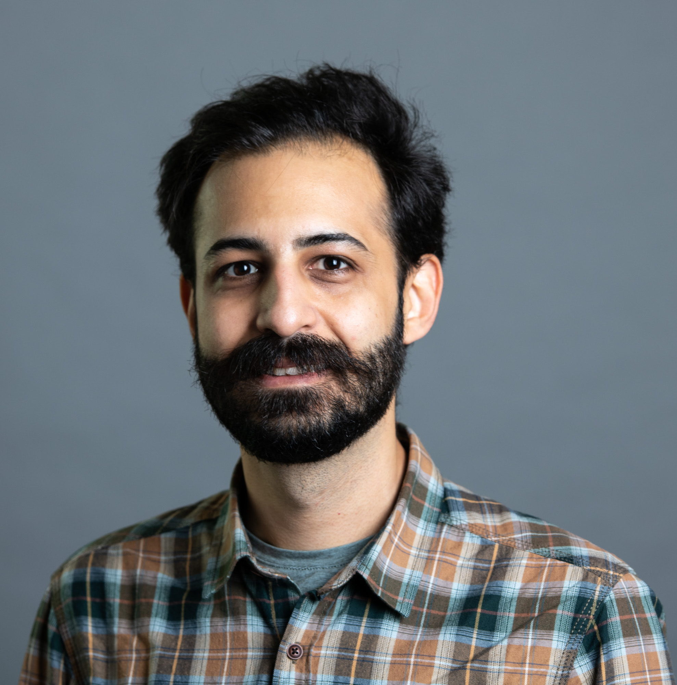

Shayan Edalatmanesh
Computational physicist & physical chemist
I use electronic-structure theory and simulations to understand how molecules and low-dimensional polymers behave on surfaces, and to connect those calculations directly to what is measured in the lab. Based in San Sebastián, Spain.

About
I trained as a physicist and hold a PhD in Physical Chemistry from Palacký University (2023). My work is theory-driven surface and molecular nanoscience, in the space where electronic structure, scanning-probe observables and switching dynamics meet.
I have spent more than seven years working with density functional theory and have completed two postdoctoral positions in San Sebastián, at DIPC and at CSIC/CFM, with visiting stays at UAM Madrid and Aalto University. I care about methods that are reproducible and well documented, which is why I develop and maintain open-source tools alongside my research.
Research
- Quantum phenomena on surfaces First-principles modelling of molecules and nanostructures on metal and insulating substrates, and how their electronic states appear in STM and AFM.
- Non-Hermitian topological phenomena Topological states in open and driven systems, where gain, loss and coupling to an environment reshape the physics.
- Tunable quantum matter for spintronics Designing molecular and low-dimensional systems whose magnetic and electronic properties can be switched on demand.
Background
-
2025 – 2026
Postdoctoral Researcher CSIC / Centro de Física de Materiales, San Sebastián
-
2023 – 2024
Postdoctoral Researcher Donostia International Physics Center (DIPC), San Sebastián
-
2018 - 2023
PhD, Physical Chemistry Palacký University Olomouc & Institute of Physics of the Czech Academy of Sciences, Prague
Expertise
Software
- PPSTM Open-source package for simulating STM images from first-principles electronic-structure data. Author and maintainer.
Publications
21 peer-reviewed articles, including papers in Nature Nanotechnology, Nature Chemistry, Nature Communications and Angewandte Chemie.
Talks
Conference and seminar talks, as well as public lectures and outreach, with slides where available.
Contact
- shayan.edalatmanesh@proton.me
- Elsewhere
- ORCID · Google Scholar · LinkedIn